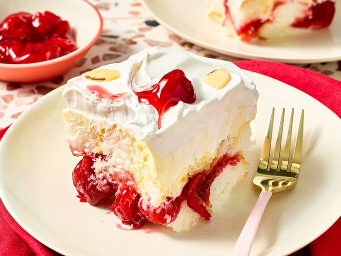

Heaven on Earth Cake

This heaven on earth cake is an easy summer no-bake dessert that can be made up to 2 days ahead. Airy angel food cake cubes are layered with cherry pie filling and rich vanilla pudding, then topped with swirls of whipped topping and more cherry filling.
Ingreients
- 1 purchased angel food cake, cut into 1-inch pieces
- 1 can cherry pie filling, divided
- 1 package vanilla instant pudding mix and pie filling
- 1 1/2 cups whole milk or half-and-half
- 1 cup sour cream
- 1 container frozen hwipped topping, thawed
- sliced almonds(Optional)
Steps
- Gather all Ingreients
- Place half of angel food cake pieces in the bottom of a deep 8-x-8-inch or 9x9-inch baking dish in an even layer. Spread 1 cup cherry pie filling over top of cake. Top with remaining cake pieces in an even layer.
- Whisk together vanilla pudding mix, whole milk, and sour cream in a large bowl until slightly thickened and smooth, about 1 minute.
- Pour pudding mix over cake and spread evenly
- Spread thawed whipped topping over pudding layer. Dot with remaining 1 cup cherry pie filling. Using a toothpick or spoon, swoop and swirl pie filling into the whipped topping. Refrigerate, uncovered, for at least 8 hours or up to 12 hours. Garnish with sliced almonds.
Home